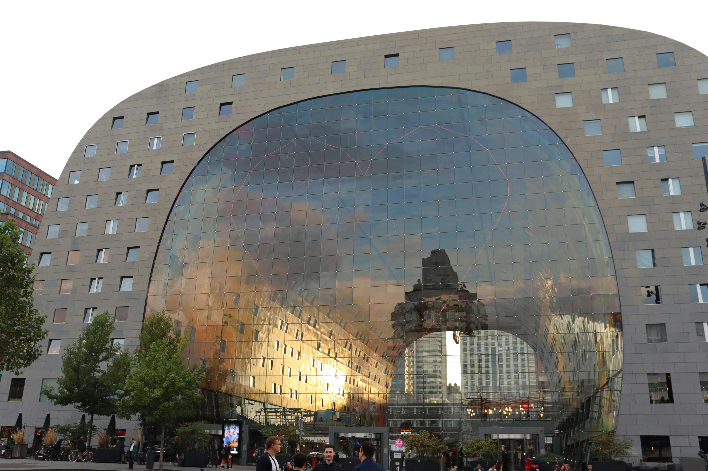
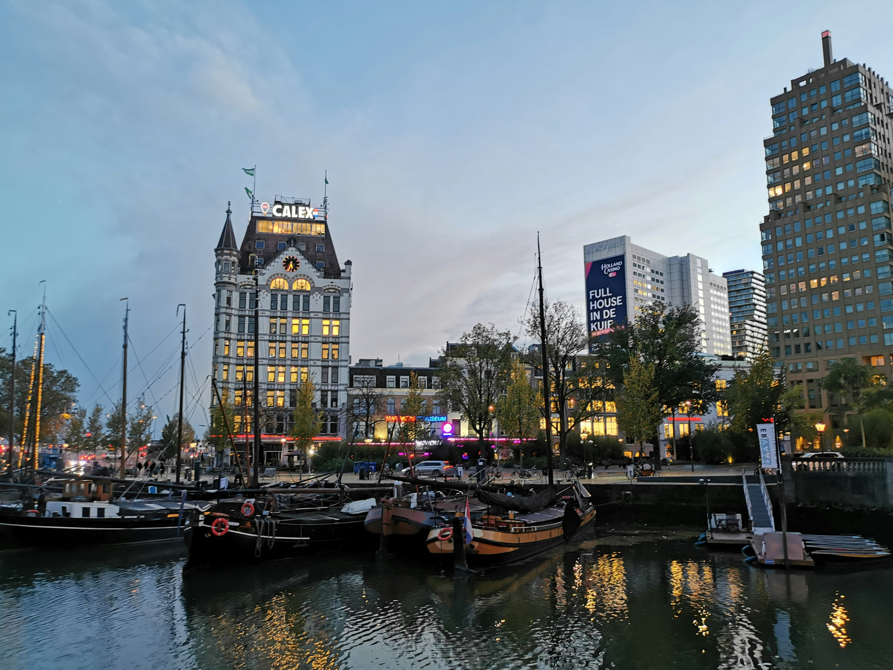

Iconic landmarks



Rotterdam is the Netherlands' second-largest city and one of Europe's most modern and dynamic urban centers. Known for its cutting-edge architecture, vibrant cultural scene, and world-class port, Rotterdam offers a unique blend of innovation and tradition.
After being heavily bombed during World War II, Rotterdam was rebuilt with a forward-thinking vision that has made it a showcase of contemporary architecture and urban planning. Today, the city is a living laboratory of modern design and sustainable living.
From the iconic Erasmus Bridge to the innovative Cube Houses, Rotterdam continues to push boundaries and redefine what a modern European city can be.
Population
Nationalities
Year Founded
Port in Europe


"Rotterdam has been my favourite city to visit, shop and study in! I'm able to show you around the place and provide you with plenty of memories to savour!